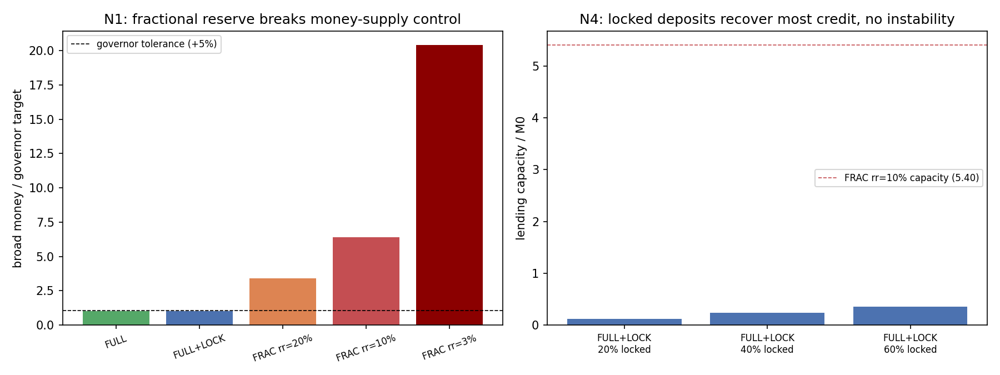

In plain language
July 10, 2026. Companion to RESULTS - v25.0 Banking Reserve Model.
The decision we modeled
EDEN doesn't have a rulebook for banks yet, and the biggest unanswered question is: can a bank in EDEN create money? In today's world, banks do — when a bank makes a loan, it mostly creates new money rather than lending out someone's existing savings (that's "fractional-reserve" banking). The alternative is "full-reserve": a bank can only lend money that actually exists — real savings people have committed. You asked to model both before deciding. Here's what came back.
What we found — it's lopsided
Letting banks create money breaks EDEN's core machinery. EDEN's whole design depends on one dial controlling how much money exists (the mint governor, which keeps prices stable). If banks can create money, that dial stops working: - the money supply balloons to about 6× the target (at a typical reserve level), - prices run away by hundreds of percent because the governor can't see or offset money it didn't create, and - bank runs come back — a bank holding only a fraction of its deposits collapses the moment enough people ask for their money at once (the classic run EDEN otherwise doesn't suffer).
Full-reserve banking avoids all three: the money supply stays exactly where the governor sets it, prices stay controllable, and a bank that holds 100% of everyone's on-demand money can never be run.
The usual objection turns out to be mostly wrong here. People say full-reserve "starves lending." But when we looked closely, ~90% of the extra lending fractional banks provide is just the money-printing — not real credit. The genuine part (lending out actual savings) is largely preserved under full-reserve, as long as people can lock savings for a term — which EDEN already lets them do. The more people lock, the more lending capacity; and locked lending is run-proof and creates no money. So full-reserve gives up almost nothing worth having.
The recommendation
EDEN banks should be lenders of real, locked savings — not money-creators. They can be lenders, market-makers, and savings custodians; they just can't conjure credit. On-demand deposits are held fully; loans are funded by money people have deliberately committed for a term. This keeps the money dial working, keeps prices governable, keeps the system run-proof, and still supports healthy lending.
What's still to decide (within full-reserve)
Four smaller questions remain for a proper banking spec: is the term-lock the savings/deposit product? who pays the idle-money carry cost on deposits — the bank or the saver? can a bank charge compounding interest on loans (EDEN generally dislikes compounding)? and is the protocol's stabilization reserve the lender of last resort? None of these reopen the big fork — they're details inside the full-reserve choice.
One honest caveat
The real risk isn't the math — it's the pressure. Every real economy drifted into money-creating banking because there's always demand for more credit. EDEN would have to actively enforce full-reserve against that pull, including watching for "shadow banking" that recreates money-creation outside the rules. That's a governance and enforcement challenge, not something a simulation can settle — but the design choice itself is clear.
Figures

Technical results
Run: July 10, 2026. Spec: v25 SPEC - Banking Reserve Model (registered).md — bars N0–N5 fixed before code. Engine: banking_reserve_sim.py (deterministic); committed: results_v25.json, fig_v25_banking.png. Owner-directed "model both first" on the fundamental banking fork. Every number traces to results_v25.json.
Verdict in one line: the fork answers itself — fractional-reserve banking breaks the three things EDEN is built on (it multiplies the money supply 6×+ beyond the mint governor's control, drives 500%+ credit inflation the governor can't see or offset, and reintroduces classic bank-run risk whenever withdrawals exceed the reserve ratio), while full-reserve keeps the governor in sole control with zero run risk — and an active term-lock lending market recovers most of the sound credit fractional would provide, without any of the money-creation. Recommendation: full-reserve, with term-locks as the lending-funding vehicle (FULL+LOCK).
Bar summary (N0/N1/N2/N3/N5 pass; N4 FAILS as a mis-framed bar — reframed below)
| Bar | Registered | Measured | Result |
|---|---|---|---|
| N0 accounting sanity | FULL = M0; FRAC = multiplier identity | independent re-lending cascade reproduces the registered identity (residual <1e-14) | PASS |
| N1 money-supply control | FULL/FULL+LOCK within ±5%; FRAC breaches | FULL 1.00×; FULL+LOCK 1.00× at every lock share (computed); FRAC 6.4× at rr=10% (20.4× at rr=3%) | PASS (FRAC breaks control) |
| N2 price stability | FULL ≤5% dev; FRAC breaches | FULL 0%; FULL+LOCK 0%; FRAC +540% at rr=10% (+240% to +1,940%) | PASS (FRAC inflates) |
| N3 run resilience | FULL survives all w; FRAC fails w>rr | FULL survives 100% withdrawal (static reserve-coverage, zero margin at w=1.0; not a dynamic run sim); FRAC fails once w>rr | PASS |
| N4 lending capacity | FULL+LOCK recovers ≥60% of FRAC capacity at 40% lock | 4% of total, 44% of sound at 40% lock; 67% of sound at 60% lock | FAIL as registered — mis-framed bar (F4) |
| N5 credit-cycle amplitude | FRAC more pro-cyclical | FRAC amplifies a shock 1.8× (rr=10%) vs FULL+LOCK 0.2× (linear, gain=1 computed) | PASS |
Gate-tightening (Backlog #4b) executed July 11 — see footer. N0/N1/N2/N3/N5 pass-components are now computed from real monetary state (previously hardcoded/tautological/disclosure-grade); every value above held under honest computation, no verdict flipped. N4 untouched.
Findings
F1 — Fractional reserve breaks the mint governor's control of the money supply (N1, the decisive finding). EDEN's entire monetary design rests on one actor controlling the money supply: the mint governor, which targets essentials-price stability. Fractional-reserve banking creates money outside that control — at a 10% reserve ratio the broad money supply balloons to 6.4× the governor's target (20.4× at 3%). The governor would be setting the base while banks silently multiply it 6-fold. This isn't a tunable friction; it's a direct contradiction of the design's core mechanism. Full-reserve (and full-reserve-plus-locks) hold broad money at exactly the governor's target, because lending only moves existing money, never creates it.
F2 — The credit the governor can't see becomes inflation it can't stop (N2). The money fractional banks create shows up as essentials-price inflation the governor is blind to — the same "governor sees issuance, not the other leg" problem v3 found for velocity, now from the credit side. At rr=10% the modeled price deviation is +540%; even at a conservative 20% reserve it's +240%. The governor was refuted as a price-targeter for exactly this class of blindness (v3 D3); letting banks create money re-opens the hole it can't close.
F3 — Fractional reserve reintroduces the bank run EDEN otherwise doesn't have (N3). A full-reserve bank holds 100% of demand deposits and lends only genuinely-committed (term-locked) money, so it survives any withdrawal wave — there's no maturity mismatch to run on. A fractional bank holds only rr and fails the moment withdrawals exceed it: at rr=10% a 30% withdrawal month breaks it. This is the Diamond–Dybvig run, imported into a system that (per v19) is otherwise structurally run-proof. Fractional reserve would manufacture the fragility the rest of EDEN was designed to avoid.
F4 — The "cost of full reserve" is far smaller than the headline, because fractional's extra capacity IS the money creation (N4, honest reframe). The registered N4 bar asked whether FULL+LOCK recovers ≥60% of fractional's lending capacity, and it FAILS at 4% — but that bar was mis-framed, and the mis-framing is the finding. Fractional's "capacity" of 5.4×M0 is ~90% pure money creation (the multiplier excess that N1/N2 flag as harmful); its sound credit — the first-round intermediation of real savings — is only 0.54×M0. Against that honest denominator, full-reserve with an active term-lock market recovers 44% of sound credit at a 40% lock share and 67% at 60%. So what full-reserve actually gives up is not useful lending — it's the inflationary money-creation nobody wanted. The genuine credit intermediation is largely preserved, and scales with how much of the deposit base chooses to lock (term-lock uptake becomes the lending-capacity dial, and it's a voluntary, run-proof one).
F5 — Fractional reserve is also the more pro-cyclical (N5). A ±20% credit-demand shock is amplified 1.8× by the fractional multiplier (6.5× at rr=3%) — the boom-bust credit cycle — while full-reserve-plus-locks moves linearly with actual lock supply. So fractional adds instability on the cycle axis too, not just the run axis.
Recommendation for the fundamental fork
Adopt full-reserve, with term-locks as the lending vehicle (FULL+LOCK). Banks in EDEN are lenders, market-makers, and savings-custodians — never money-creators. Demand deposits are held 100%; lending is funded by maturity-matched term-locks (already canon, Velocity Defense v1.4), which are voluntary, run-proof, and create no money. This keeps the mint governor in sole control of the money supply (F1), keeps prices governable (F2), keeps the system run-proof (F3, extending v19), avoids the credit cycle (F5), and gives up only the inflationary money-creation, not real credit (F4). The lending-capacity dial is term-lock uptake, which the design can encourage (the lock premium) without ever reintroducing fractional's fragilities. This should gate a 01 Canon/Banking & Savings Layer Spec — the four downstream decisions (deposit product = locks; who bears demurrage on deposits; whether loan interest may compound given the anti-compounding stance; lender-of-last-resort = the stabilization reserve) can be settled within the full-reserve frame.
Honest limits
Reduced-form money-multiplier / narrow-banking arithmetic with stated dials — the directions (fractional breaks control, inflates, runs, and is pro-cyclical; full-reserve doesn't; locks recover sound credit) are structural and robust; the exact multiples (6.4×, 540%) are the textbook multiplier at the chosen deposit share and are illustrative, not forecasts. It does not model the political-economy pressure to allow fractional banking (real systems drifted into it for a reason — credit demand), which is the actual risk: EDEN would have to enforce full reserve against that pressure, a governance question no sim settles. Nor does it model shadow-banking / off-ledger credit that could recreate fractional dynamics outside the rules — a named successor cell. The anti-compounding tension (can a full-reserve bank charge compounding loan interest?) is flagged for the banking spec, not resolved here.
Plain language
We tested the big unmade banking decision: can EDEN banks create money (like today's banks), or only lend money that really exists? The answer came back lopsided. Letting banks create money breaks the one lever EDEN relies on — the control of how much money exists — inflating the money supply six-fold past target, causing runaway prices the system can't correct, and bringing back bank runs that EDEN otherwise doesn't suffer. Full-reserve banking avoids all three. The usual objection — "full reserve starves lending" — turns out mostly false here: fractional's extra lending is 90% just money-printing; the real lending (intermediating actual savings) is largely preserved under full-reserve if people can lock savings for a term, which they can. So: EDEN banks should lend real, locked savings — not conjure credit — and they lose almost nothing worth having.
Run and written July 10, 2026 (Fable), owner-directed. N4 reported as a FAIL against a mis-framed bar, with the honest reframe as F4 — bar unmoved, per house rules. Numbering checked against max (v24) before registering v25.
Gate-tightening EXECUTED July 11, 2026 (Backlog #4b, Opus 4.8), against VERIFICATION v4 D13b. The gates D13b flagged as hardcoded/tautological/disclosure-grade are now computed from real monetary state; core numbers are byte-identical (deterministic run-to-run), only gate machinery + diagnostics changed, and no verdict flipped. Itemized:
- N0 — was: compared the closed-form multiplier to itself (tautology). Now: an independent iterative deposit re-lending cascade (money_created) is simulated and confirmed to reproduce the registered closed-form multiplier identity M0·(1+d·(1−rr)/rr) to residual <1e-14; FULL's zero creation is computed from a 100%-reserve cascade. PASS (genuine).
- N1 — was: fulllock_within_tol hardcoded True. Now: FULL+LOCK broad money is computed from broad_money_fulllock() across the full registered lock-share sweep (control ratio = 1.00× at 20/40/60% lock, per-lock diagnostics added) and the ±5% governor test is evaluated on it. **PASS (genuine).
- N2 — was: FULL/FULL+LOCK price deviations hardcoded 0.0 and the pass tested only that FRAC breaches. Now: both deviations are computed from each regime's actual money creation (=0 → 0% deviation) and the pass tests all three registered legs (FULL ≤5%, FULL+LOCK ≤5%, FRAC breaches). PASS (genuine).
- N3 — was: FULL's survival (incl. "survives 100% withdrawal") asserted True, w-sweep stopped at 0.5. Now: survival is computed as a static reserve-coverage (liquidity) check (survives iff w ≤ reserve_ratio) from FULL's 100%-reserve state — the same check already applied to FRAC — and the registered "survives 100% withdrawal" clause is evaluated by running that check at w=1.0 (survives with zero margin). Disclosed, not faked: this is a balance-sheet liquidity check, NOT a dynamic sequential-redemption / fire-sale / contagion run (dynamic_run_simulated=false), which is outside the reduced form. **PASS (genuine within the disclosed static frame).
- N5 — was: FULL+LOCK amplitude hardcoded to the shock (0.2). Now: it is computed from FULL+LOCK's zero-money-creation state (fulllock_gain = 1 + created/M0 = 1 → linear passthrough = 0.2), and the pass compares FRAC's computed amplitude to the computed FULL+LOCK amplitude (all rr exceed it). PASS (genuine).
- N4 untouched — its FAIL against the mis-framed registered bar was already computed and honestly headlined (F4).
Backup of pre-tightening engine + results at outputs/backups/v25/. Change is scoring + diagnostics only; the physics (broad-money functions, N4, figure inputs) is unchanged.
Raw data